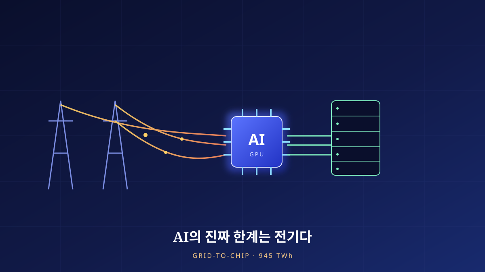

AI의 진짜 한계는 전기다
우리는 AI의 미래를 칩의 속도로 상상한다. 그러나 데이터센터가 소비하는 전력은 2024년 약 415 TWh에서 2030년 약 945 TWh로 6년 만에 두 배가 된다. 진짜 병목은 GPU가 아니라, 발전소에서 랙까지 전기를 밀어 넣는 전력망(grid)이다. 945 TWh 시대의 ‘그리드-투-칩’ 병목을 이슈 분석의 눈으로 해부한다.

GPU가 아니라 전기가 부족하다
지난 2년간 AI 산업의 서사는 한 가지 부품을 중심으로 돌아갔다. GPU였다. 누가 더 많은 가속기를 확보했는가, 다음 세대 칩은 얼마나 빠른가가 곧 경쟁력의 지표처럼 읽혔다. 그러나 대규모 데이터센터를 실제로 짓고 돌려 본 사업자들이 최근 한목소리로 지목하는 제약은 칩이 아니다. 그들은 이제 “전기를 어디서, 언제 끌어올 수 있는가”를 먼저 묻는다. 부지 선정의 첫 번째 기준이 광케이블도 인력도 아닌 가용 전력(available power)으로 바뀌었다는 것은, 이 산업의 병목이 조용히 이동했음을 뜻한다.
이 전환을 이해하려면 관점을 하나 바꿔야 한다. GPU는 공장에서 만들어 배로 실어 나르면 되는 상품이지만, 전기는 만들어 낸 그 순간 곧바로 소비되어야 하는 흐름이다. 저장이 어렵고, 이동에는 물리적 인프라가 필요하며, 그 인프라는 착공에서 준공까지 수년이 걸린다. 칩의 공급은 파운드리 증설로 1~2년 안에 늘릴 수 있지만, 한 지역에 수백 메가와트를 새로 공급하는 송·변전 설비는 인허가와 건설에만 5년, 길게는 10년 이상이 든다. 두 시계(時計)의 속도가 다르다는 이 단순한 사실이, AI 인프라의 새로운 한계선을 긋는다.
이 병목의 이동은 산업의 언어에서도 감지된다. 몇 년 전만 해도 데이터센터 사업 계획서의 첫 장에는 냉각 방식과 네트워크 지연이 놓였다. 지금 그 자리에는 ‘계통 연계(interconnection)’ 일정과 확보 가능한 계약 전력이 온다. 전력회사에 신규 대용량 수전을 신청하고 실제로 전기를 받기까지의 대기 행렬은 지역에 따라 수년으로 늘어났고, 이 대기 시간 자체가 사업의 성패를 가르는 변수가 됐다. 연산 능력은 돈으로 즉시 살 수 있지만, 특정 지점의 계약 전력은 돈이 있어도 줄 서서 기다려야 하는 자원이 된 것이다.
그래서 이 글은 AI를 ‘모델의 문제’가 아니라 ‘인프라의 문제’로 다시 읽는다. 알고리즘이 아무리 영리해져도, 그것을 돌릴 전자(電子)가 정해진 시간에 정해진 장소로 흐르지 않으면 아무 일도 일어나지 않는다. 945 TWh라는 숫자는 그 물리적 현실을 압축한 좌표다.
Chapter 2. 숫자의 규모945 TWh — 6년 만에 두 배
먼저 규모를 정확히 보자. IEA의 「Energy and AI」(2025년 4월)에 따르면, 전 세계 데이터센터의 전력 소비는 2024년 약 415 TWh에서 2030년 약 945 TWh로 늘어난다. 6년 만에 거의 두 배다. 연평균으로 환산하면 약 15%씩 증가하는 셈인데, 이는 같은 기간 다른 전력 소비 부문 평균 성장률의 4배가 넘는다. 절대량만 보면 945 TWh는 2030년 전 세계 전력 소비의 3% 미만에 그친다. 전체 그림에서 데이터센터는 여전히 ‘작은 조각’이다.
그러나 이슈의 본질은 총량이 아니라 증가 속도와 집중도에 있다. 전력망은 전국 평균이 아니라 특정 노드(node)에서 무너진다. IEA는 이 성장의 약 80%가 미국과 중국에서 발생한다고 본다. 미국은 2030년까지 약 +240 TWh(약 +130%), 중국은 약 +175 TWh(약 +170%) 늘어난다. 여기에 더해, 데이터센터는 몇몇 지역에 밀집한다. 값싼 토지, 통신 백본, 세제 혜택이 겹치는 곳으로 몰리기 때문이다. 전국 통계로는 3% 미만이어도, 그 부하가 한 카운티, 한 변전소 인근에 응축되면 그곳의 전력망은 설계 여력을 초과한다.
집중도가 왜 문제인지는 ‘평균의 함정’으로 설명된다. 전국 단위로 보면 데이터센터 부하는 완만하게 흡수될 여지가 있다. 그러나 실제 전력 계획과 설비는 전국이 아니라 지역 계통 단위로 짜인다. 특정 지역에 수 기가와트급 부하가 짧은 기간에 몰리면, 그 지역의 발전 예비력과 송전 용량은 순식간에 한계에 다다른다. 미국의 성장분 +240 TWh, 중국의 +175 TWh라는 국가 총량조차, 실제로는 몇몇 클러스터에 응축되어 지역 계통에 국지적 충격으로 나타난다. 성장이 빠를수록, 그리고 좁은 곳에 몰릴수록 병목은 심해진다 — 이것이 ‘작은 조각’인 데이터센터가 그리드 담당자에게는 결코 작지 않은 이유다.
공급 구조도 함께 봐야 한다. IEA는 이 증가분의 절반가량을 재생에너지가 채우되, 천연가스가 약 +175 TWh를 담당하고 원자력과 지열이 신규 견인원으로 부상한다고 전망한다. 즉 945 TWh는 ‘재생이냐 화석이냐’의 이분법으로 채워지지 않는다. 24시간 끊김 없이 돌아가야 하는 데이터센터의 특성상, 간헐적인 재생에너지만으로는 부족하고, 안정적 기저부하를 대는 가스·원자력이 함께 동원된다. 성장의 속도, 지역 집중, 그리고 혼합된 공급원 — 이 세 가지가 겹치는 지점에서 병목이 태어난다.
발전소에서 랙까지, 전기가 지나는 길
‘그리드-투-칩(grid-to-chip)’은 전기가 발전소에서 출발해 최종적으로 GPU 실리콘에 도달하기까지 거치는 전 계층을 하나로 묶어 보는 관점이다. 이 사슬의 어느 한 고리라도 좁으면, 앞뒤가 아무리 넓어도 전체 처리량은 그 좁은 고리에 갇힌다. 사슬은 대략 다섯 계층으로 나뉜다 — 발전(원자력·가스·재생), 송전(고압 장거리), 변전(전압 강하·배전), 데이터센터 수전 설비, 그리고 랙 내부의 전력 분배와 냉각이다.
병목이 집중되는 곳은 사슬의 앞쪽 물리 인프라다. 미국 전력망을 분석한 하버드 벨퍼센터의 연구는, 상당수 송·배전 설비가 수십 년 전 설계 여력을 기준으로 건설되어 노후화했으며, AI 데이터센터가 몰고 오는 급격한 부하 증가를 감당할 설계 마진이 부족하다고 지적한다. 문제는 단순한 발전량이 아니다. 발전소에서 남는 전기가 있어도, 그것을 데이터센터가 있는 곳까지 실어 나를 송전선과 전압을 낮춰 공급할 변전 용량이 없으면 소용이 없다. 그리고 그 설비의 신설·증설은 앞서 말한 대로 수년이 걸린다.
사슬의 반대쪽 끝, 즉 데이터센터 안에서도 병목이 생긴다. AI 학습용 GPU는 랙 한 대에 예전 서버의 몇 배에 달하는 전력을 밀어 넣는다. 랙당 소비 전력이 수십 킬로와트로 치솟으면, 그 전기를 안전하게 배분하는 배전과 그로 인한 열을 뽑아내는 냉각이 새로운 제약이 된다. 전력을 끌어와도 그것을 칩까지 ‘밀도 있게’ 전달하고 식히는 일 자체가 공학적 난제가 되는 것이다. 결국 그리드-투-칩은 어느 한 계층의 문제가 아니라, 다섯 계층이 서로 다른 속도로 움직이며 만들어 내는 시스템 병목이다.
이 사슬이 특히 까다로운 이유는, 계층마다 리드타임과 소유 주체가 다르다는 데 있다. 발전소는 발전 사업자가, 송전망은 계통 운영자가, 변전과 배전은 전력회사가, 데이터센터 내부 설비는 사업자가 각각 책임진다. 하나의 사슬을 여러 주체가 나눠 쥐고 있으니, 한 계층이 병목이 되어도 다른 계층이 즉시 메우기 어렵다. 게다가 전력망은 안정성을 위해 여유(마진)를 두고 운영되어야 하는데, 데이터센터는 24시간 거의 일정한 고부하를 걸어 그 마진을 빠르게 잠식한다. 순간 첨두를 치는 일반 수요와 달리, 밤낮없이 꾸준히 높은 부하는 설비를 상시 한계 근처에서 돌게 만든다. 그래서 같은 총소비량이라도 데이터센터 부하는 그리드에 더 무겁게 얹힌다.
누가 이 전기의 값을 치르는가
여기서 이슈는 공학을 넘어 사회로 넘어간다. 데이터센터가 한 지역에 대규모로 들어서면, 그 지역의 전력 수요 지형이 통째로 바뀐다. 미국 버지니아주는 이 논쟁의 상징이 됐다. 벨퍼센터가 인용한 자료에 따르면, 버지니아주에서는 2023년 기준 데이터센터가 주 전체 전력의 약 26%를 소비했고, 전력연구원(EPRI)은 조건에 따라 2030년 그 비중이 41~59%에 이를 수 있다고 전망했다(지역·시나리오에 따른 조건부 수치다). 한 주(州)의 전력 절반 가까이를 특정 산업 시설이 쓰는 상황은, 요금과 인프라 투자의 분담을 둘러싼 정치적 질문을 피할 수 없게 만든다.
형평성 논쟁의 핵심은 비용의 전가다. 급증하는 데이터센터 부하에 맞춰 송·변전 설비를 새로 지으면, 그 투자비는 상당 부분 요금 기반(rate base)을 통해 회수된다. 즉 데이터센터를 위해 보강한 그리드의 비용 일부가, 그 지역에 사는 일반 가정과 소상공인의 전기요금에 얹힐 수 있다. 정보기술 산업의 이익은 소수 기업에 집중되는데, 그 인프라 비용은 지역 사회에 분산된다는 구도가 “왜 우리가 남의 AI 전기값을 내야 하나”라는 반발을 낳는다. 여기에 냉각을 위한 물 소비, 신규 가스 발전에 따른 탄소·대기 배출 같은 환경 부담이 더해진다.
그러나 균형을 위해 반대편도 정직하게 놓아야 한다. 첫째, 데이터센터는 지역에 세수와 고용, 인프라 투자를 유발하고, 늘어난 전력 수요가 오히려 노후 그리드의 현대화를 앞당기는 촉매가 되기도 한다. 둘째, 여러 대형 사업자는 신규 전력 수요를 무탄소 전원 조달과 연계하겠다고 약속하며, 실제로 원자력·지열 계약을 선도하고 있다. 셋째, 규모의 경제로 초대형 데이터센터는 소규모 분산 서버보다 단위 연산당 효율이 높은 경우가 많다. 요컨대 이 문제는 ‘데이터센터=악’의 프레임으로 단순화되지 않는다. 쟁점은 존재 여부가 아니라 비용과 편익을 누가 어떻게 나누느냐다. 요금 설계에서 데이터센터에 별도 요금제를 적용해 인프라 비용을 원인자에게 귀속시키는 방안, 신규 부하에 무탄소 전원 조달을 의무화하는 방안 등이 이 분배의 저울을 맞추는 도구로 논의된다.
이 분배 문제를 어렵게 만드는 또 하나의 축은 속도의 불일치다. 데이터센터는 몇 달 만에 지어져 곧바로 부하를 건다. 그러나 그 부하를 감당할 송·변전 보강은 수년이 걸린다. 그 사이의 간극은 기존 설비를 더 세게 돌리거나, 급하게 가스 발전을 끌어오거나, 최악의 경우 다른 수요를 밀어내는 방식으로 메워진다. 어느 쪽이든 비용과 리스크는 발생하고, 그것을 누가 부담하느냐가 다시 형평성 논쟁으로 되돌아온다. 결국 요금·환경 논쟁의 뿌리에는 앞 장에서 본 그리드-투-칩의 물리적 리드타임이 그대로 놓여 있는 셈이다. 사회적 갈등처럼 보이는 문제의 상당 부분이, 실은 전력망이 빨리 자라지 못한다는 공학적 제약의 그림자다.
세 갈래의 출구 — 발전·저장·소프트웨어
병목이 물리적이라면 출구도 물리와 소프트웨어에 걸쳐 있다. 완화책은 크게 세 갈래다. 첫째는 공급을 늘리는 길이다. 24시간 안정적으로 대규모 기저부하를 대려면 원자력이 유력한 후보이며, 특히 표준화된 소형모듈원자로(SMR)는 데이터센터 인근에 분산 배치할 수 있다는 점에서 주목받는다. 다만 SMR은 아직 상용 실적이 제한적이고 인허가·건설 리드타임이 길다. 지열은 24시간 무탄소 기저부하를 제공하지만 입지 제약이 있다. 둘째는 변동성을 흡수하는 길이다. 태양광·풍력 같은 재생에너지에 대규모 배터리 저장(BESS)을 결합하면 간헐성을 완충할 수 있으나, 계절 단위의 장기 저장은 여전히 비싸고 미성숙하다.
셋째, 그리고 시스템 엔지니어의 눈에 가장 흥미로운 길은 수요 자체를 영리하게 만드는 소프트웨어 완화책이다. 냉각·전력 손실을 줄여 PUE(전력사용효율)를 개선하고, 학습 같은 지연에 둔감한 워크로드를 전력이 남거나 값싼 시간대·지역으로 옮겨 실행하는 워크로드 스케줄링이 대표적이다. 데이터센터를 고정된 부하가 아니라, 그리드의 사정에 맞춰 소비를 조절하는 유연한 부하(flexible load)로 재설계하는 것이다. 발전을 늘리는 데는 10년이 걸리지만, 스케줄러를 고치는 데는 몇 달이면 된다. 공급 측 해법이 근본적이되 느리다면, 수요 측 해법은 즉효적이되 부분적이다. 현실의 945 TWh는 이 셋을 동시에 밀어붙여야 감당된다.
| 완화책 | 강점 | 한계·리스크 | 시간축 |
|---|---|---|---|
| 원자력 · SMR | 24시간 무탄소 기저부하, 고밀도 | 긴 인허가·건설, SMR 상용 실적 제한 | 장기(5~10년+) |
| 지열 | 24시간 안정 무탄소, 부지 집약 | 입지 제약, 초기 시추 비용 | 중·장기 |
| 재생 + 배터리 저장 | 빠른 증설, 낮은 한계비용 | 간헐성, 장기 저장 미성숙·고비용 | 중기 |
| 천연가스 | 즉시 안정 공급, 유연성 | 탄소·대기 배출, 좌초자산 위험 | 단·중기 |
| PUE 개선 · 냉각 효율 | 기존 설비에서 즉시 절감 | 절감 폭에 물리적 상한 | 단기 |
| 워크로드 스케줄링(유연 부하) | 수개월 내 적용, 그리드 부담 분산 | 지연 민감 작업엔 부적합, 조율 복잡 | 단기 |
이 세 갈래 사이의 우선순위는 시간에 따라 달라진다. 당장 이번 해와 내년의 부하는 이미 지어진 설비와 확보된 계약 전력의 한계 안에서 감당해야 하므로, 단기에는 PUE 개선과 스케줄링 같은 수요 측 완화가 사실상 유일하게 즉효적인 지렛대다. 반대로 2030년 945 TWh를 실제로 뒷받침하는 것은 지금 착공해야 그때 준공되는 발전·송전 설비, 즉 공급 측 결정이다. 문제는 이 두 시간축이 서로를 배신하기 쉽다는 점이다. 단기 수요 관리에만 기대면 장기 공급 투자가 미뤄지고, 공급 확충만 믿고 수요를 방치하면 설비가 준공되기 전에 병목이 먼저 온다. 결국 완화책은 ‘무엇을 고를까’가 아니라 ‘어떤 순서로 겹쳐 쌓을까’의 문제다.
세 갈래 사이에서 최근 부상하는 절충안이 전원과 데이터센터를 붙여 짓는(co-location) 방식이다. 혼잡한 공용 송전망을 거치지 않고 발전 설비 옆에 데이터센터를 세워, 계통 연계의 대기 행렬 자체를 우회하려는 시도다. 원자력 발전소 인접지나 전용 가스·지열 발전과 묶는 형태가 대표적이다. 송·변전 병목을 건너뛴다는 점에서 매력적이지만, 이 방식은 다른 논쟁을 부른다. 특정 발전량을 데이터센터가 사실상 독점하면 그만큼 공용 계통에 돌아갈 몫이 줄어, 지역 전체의 요금과 안정성에 영향을 준다는 지적이다. 병목을 우회하는 해법이 곧 형평성 문제를 재점화하는 셈이어서, 여기서도 앞서 본 ‘비용과 편익의 분배’라는 질문이 되돌아온다.
표에서 드러나는 구조는 명확하다. 근본적인 해법일수록 시간이 오래 걸리고, 즉시 적용 가능한 해법일수록 절감의 상한이 낮다. 그래서 어느 하나의 ‘은탄환’은 없다. 원자력·지열이 장기 기저부하를 깔고, 재생+저장이 중기 변동성을 흡수하며, PUE·스케줄링이 단기의 급한 불을 끄는 — 시간축이 다른 해법들을 겹쳐 쌓는 포트폴리오 전략만이 현실적이다.
맺음말전자(電子)의 속도로 다시 그리는 미래
AI의 한계를 이야기할 때 우리는 흔히 파라미터 수나 벤치마크 점수를 떠올린다. 그러나 945 TWh라는 좌표가 알려 주는 것은, 이 기술의 성장 곡선이 결국 전력망이라는 물리적 인프라의 곡선에 묶여 있다는 사실이다. 알고리즘은 소프트웨어의 속도로 진화하지만, 그것을 돌리는 전기는 발전소와 송전탑과 변전소의 속도로만 흐른다. 이 두 속도의 간극이 앞으로 몇 년간 AI 인프라의 실질적 병목을 규정할 것이다.
이 관점은 우리가 AI의 진보를 재는 잣대까지 바꾼다. 지금까지 발전의 척도는 모델의 크기와 벤치마크 점수처럼 눈에 잘 띄는 지표였다. 그러나 945 TWh 시대의 현실적 척도는 오히려 보이지 않는 곳에 있다. 같은 성능을 더 적은 전력으로 내는 효율, 유휴 전력을 찾아 부하를 옮기는 유연성, 그리고 지역 사회와 갈등 없이 전원을 조달하는 협상력이다. AI 경쟁의 다음 라운드는 파라미터가 아니라 킬로와트시(kWh)로 채점될 가능성이 크다. 전기를 더 많이 쓰는 쪽이 아니라, 같은 전기로 더 많은 지능을 뽑아내는 쪽이 이긴다.
그렇다면 답은 어느 한쪽이 아니라 정렬(alignment)에 있다. 칩의 설계와 전력망의 설계가 따로 놀아서는 안 되고, 사업자의 확장 계획과 지역 사회의 요금·환경 부담이 한 테이블에서 조율되어야 한다. 발전을 늘리고, 저장으로 완충하며, 소프트웨어로 수요를 유연하게 만드는 세 갈래를 동시에 밀어붙이되, 그 비용과 편익을 원인자와 수혜자에게 정직하게 귀속시키는 제도가 함께 가야 한다. AI의 진짜 한계가 전기라면, 진짜 경쟁력은 더 빠른 칩이 아니라 전자를 제때, 제자리로, 정당한 값에 흐르게 하는 능력에서 나올 것이다.
참고
- IEA(1차 전망), Energy and AI, 2025년 4월. 데이터센터 전력 수요 2024 ≈415 TWh → 2030 ≈945 TWh(약 2배), 2030년 전 세계 전력의 3% 미만, 2024~2030 연 ~15% 성장(타 부문 4배+), 성장의 ~80%가 미·중(미 +240 TWh/+130%, 중 +175 TWh/+170%), 증가분 절반은 재생E·천연가스 +175 TWh·원자력/지열 견인. iea.org/reports/energy-and-ai/energy-demand-from-ai ; 해설: datacenterdynamics.com
- Gartner(예측, 2026-06-10). 데이터센터 전력 수요 2026년 +26%; AI 최적화 서버가 2026년 데이터센터 전력의 31%, 2027년 기존 서버 전력 추월 전망. gartner.com
- Harvard Belfer Center, “AI, Data Centers, and the U.S. Electric Grid.” 미 그리드 노후·설계 여력 초과와 AI 부하 급증 분석. [2차/부분검증] 버지니아주 데이터센터가 2023년 주 전력의 약 26% 소비, EPRI 전망 2030년 41~59%(지역·시나리오 조건부 수치). belfercenter.org/research-analysis/ai-data-centers-us-electric-grid
- [부분검증/추정] “AI 작업 1건이 일반 웹검색의 최대 1,000배 전력”은 널리 인용되는 추정치로, 모델·작업·하드웨어에 따라 편차가 크다. 반드시 ‘추정’으로 표기해 인용해야 한다. Brookings, “Global energy demands within the AI regulatory landscape.” brookings.edu
- 본문의 그림(성장 막대·그리드-투-칩 계층도)은 저자가 위 자료의 수치를 바탕으로 제작한 개념 도해다. 병목 지점(송·변전 지연, 랙 밀도)은 벨퍼센터·산업계 논의를 요약한 것으로, 특정 설비의 정량 수치가 아니라 구조를 설명하기 위한 illustrative 표현이다.